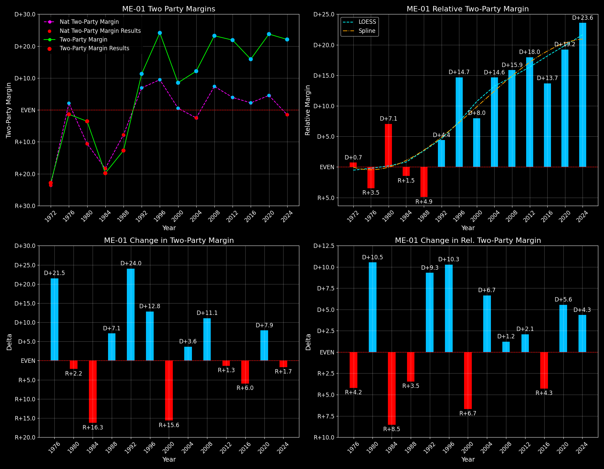

Maine's 1st Congressional District (ME-01)
Maine's 1st Congressional District (ME-01)

Margins · 3rd-Party share · Pres. deltas

Relative margins · Relative 3rd-Party · Rel. deltas
Maine's 1st Congressional District (ME-01) — Total Data
| Year | D | R | State Margin | Nat. Margin | Rel. Margin | Total votes | EVs |
|---|---|---|---|---|---|---|---|
| 1972 | 85,028(38.6%) | 135,388(61.4%) | R+22.8 | R+23.1 | D+0.3 | 220,416 | 1 |
| 1976 | 123,598(49.3%)(Δ 38,570) | 127,019(50.7%)(Δ -8,369) | R+1.4(Δ D+21.5) | D+2.1(Δ D+25.2) | R+3.4(Δ R+3.7) | 250,617(Δ 30,201) | 1 |
| 1980 | 117,613(42.8%)(Δ -5,985) | 126,274(46.0%)(Δ -745) | R+3.2(Δ R+1.8) | R+9.7(Δ R+11.8) | D+6.6(Δ D+10.0) | 274,776(Δ 24,159) | 1 |
| 1984 | 117,450(40.1%)(Δ -163) | 175,472(59.9%)(Δ 49,198) | R+19.8(Δ R+16.7) | R+18.2(Δ R+8.5) | R+1.6(Δ R+8.2) | 292,922(Δ 18,146) | 1 |
| 1988 | 131,078(43.6%)(Δ 13,628) | 169,292(56.4%)(Δ -6,180) | R+12.7(Δ D+7.1) | R+7.7(Δ D+10.5) | R+5.0(Δ R+3.4) | 300,370(Δ 7,448) | 1 |
| 1992 | 145,191(39.9%)(Δ 14,113) | 115,697(31.8%)(Δ -53,595) | D+8.1(Δ D+20.8) | D+5.6(Δ D+13.3) | D+2.5(Δ D+7.5) | 363,716(Δ 63,346) | 1 |
| 1996 | 165,053(52.0%)(Δ 19,862) | 100,851(31.8%)(Δ -14,846) | D+20.2(Δ D+12.1) | D+8.5(Δ D+3.0) | D+11.7(Δ D+9.2) | 317,121(Δ -46,595) | 1 |
| 2000 | 176,293(50.5%)(Δ 11,240) | 148,618(42.6%)(Δ 47,767) | D+7.9(Δ R+12.3) | D+0.5(Δ R+8.0) | D+7.4(Δ R+4.3) | 348,951(Δ 31,830) | 1 |
| 2004 | 211,703(55.1%)(Δ 35,410) | 165,824(43.1%)(Δ 17,206) | D+11.9(Δ D+4.0) | R+2.5(Δ R+3.0) | D+14.4(Δ D+7.0) | 384,392(Δ 35,441) | 1 |
| 2008 | 232,145(60.5%)(Δ 20,442) | 144,604(37.7%)(Δ -21,220) | D+22.8(Δ D+10.9) | D+7.3(Δ D+9.7) | D+15.5(Δ D+1.1) | 383,626(Δ -766) | 1 |
| 2012 | 223,035(59.6%)(Δ -9,110) | 142,937(38.2%)(Δ -1,667) | D+21.4(Δ R+1.4) | D+3.9(Δ R+3.4) | D+17.5(Δ D+2.0) | 374,419(Δ -9,207) | 1 |
| 2016 | 212,774(54.0%)(Δ -10,261) | 154,384(39.2%)(Δ 11,447) | D+14.8(Δ R+6.6) | D+2.1(Δ R+1.8) | D+12.7(Δ R+4.8) | 394,329(Δ 19,910) | 1 |
| 2020 | 266,376(60.1%)(Δ 53,602) | 164,045(37.0%)(Δ 9,661) | D+23.1(Δ D+8.3) | D+4.5(Δ D+2.4) | D+18.6(Δ D+5.9) | 443,112(Δ 48,783) | 1 |
| 2024 | 258,863(59.7%)(Δ -7,513) | 165,214(38.1%)(Δ 1,169) | D+21.6(Δ R+1.5) | R+1.5(Δ R+5.9) | D+23.1(Δ D+4.4) | 433,709(Δ -9,403) | 1 |
Maine's 1st Congressional District (ME-01) — Third-Party Data
| Year | D | R | Other votes | State 3rd-Party Share | 3rd-Party Nat. Share | 3rd-Party Rel. Share |
|---|---|---|---|---|---|---|
| 1972 | 85,028(38.6%) | 135,388(61.4%) | 0(0.0%) | 0.00% | 1.80% | -1.80% |
| 1976 | 123,598(49.3%)(Δ 38,570) | 127,019(50.7%)(Δ -8,369) | 0(0.0%) | 0.00% | 1.90% | -1.90% |
| 1980 | 117,613(42.8%)(Δ -5,985) | 126,274(46.0%)(Δ -745) | 30,889(11.2%) | 11.24% | 8.24% | 3.00% |
| 1984 | 117,450(40.1%)(Δ -163) | 175,472(59.9%)(Δ 49,198) | 0(0.0%) | 0.00% | 0.67% | -0.67% |
| 1988 | 131,078(43.6%)(Δ 13,628) | 169,292(56.4%)(Δ -6,180) | 0(0.0%) | 0.00% | 0.98% | -0.98% |
| 1992 | 145,191(39.9%)(Δ 14,113) | 115,697(31.8%)(Δ -53,595) | 102,828(28.3%) | 28.27% | 19.55% | 8.72% |
| 1996 | 165,053(52.0%)(Δ 19,862) | 100,851(31.8%)(Δ -14,846) | 51,217(16.2%) | 16.15% | 10.05% | 6.10% |
| 2000 | 176,293(50.5%)(Δ 11,240) | 148,618(42.6%)(Δ 47,767) | 24,040(6.9%) | 6.89% | 3.75% | 3.14% |
| 2004 | 211,703(55.1%)(Δ 35,410) | 165,824(43.1%)(Δ 17,206) | 6,865(1.8%) | 1.79% | 1.00% | 0.79% |
| 2008 | 232,145(60.5%)(Δ 20,442) | 144,604(37.7%)(Δ -21,220) | 6,877(1.8%) | 1.79% | 1.42% | 0.37% |
| 2012 | 223,035(59.6%)(Δ -9,110) | 142,937(38.2%)(Δ -1,667) | 8,447(2.3%) | 2.26% | 1.73% | 0.52% |
| 2016 | 212,774(54.0%)(Δ -10,261) | 154,384(39.2%)(Δ 11,447) | 27,171(6.9%) | 6.89% | 5.73% | 1.16% |
| 2020 | 266,376(60.1%)(Δ 53,602) | 164,045(37.0%)(Δ 9,661) | 12,691(2.9%) | 2.86% | 1.84% | 1.02% |
| 2024 | 258,863(59.7%)(Δ -7,513) | 165,214(38.1%)(Δ 1,169) | 9,632(2.2%) | 2.22% | 1.88% | 0.34% |

Two-party margins · relative · deltas
Maine's 1st Congressional District (ME-01) — Two-Party Data
| Year | D | R | 2-Party Margin | 2-Party Nat. Margin | 2-Party Rel. Margin | EVs |
|---|---|---|---|---|---|---|
| 1972 | 85,028(38.6%) | 135,388(61.4%) | R+22.8 | R+23.6 | D+0.7 | 1 |
| 1976 | 123,598(49.3%)(Δ 38,570) | 127,019(50.7%)(Δ -8,369) | R+1.4(Δ D+21.5) | D+2.1(Δ D+25.7) | R+3.5(Δ R+4.2) | 1 |
| 1980 | 117,613(48.2%)(Δ -5,985) | 126,274(51.8%)(Δ -745) | R+3.6(Δ R+2.2) | R+10.6(Δ R+12.7) | D+7.1(Δ D+10.5) | 1 |
| 1984 | 117,450(40.1%)(Δ -163) | 175,472(59.9%)(Δ 49,198) | R+19.8(Δ R+16.3) | R+18.3(Δ R+7.7) | R+1.5(Δ R+8.5) | 1 |
| 1988 | 131,078(43.6%)(Δ 13,628) | 169,292(56.4%)(Δ -6,180) | R+12.7(Δ D+7.1) | R+7.8(Δ D+10.5) | R+4.9(Δ R+3.5) | 1 |
| 1992 | 145,191(55.7%)(Δ 14,113) | 115,697(44.3%)(Δ -53,595) | D+11.3(Δ D+24.0) | D+6.9(Δ D+14.7) | D+4.4(Δ D+9.3) | 1 |
| 1996 | 165,053(62.1%)(Δ 19,862) | 100,851(37.9%)(Δ -14,846) | D+24.1(Δ D+12.8) | D+9.5(Δ D+2.6) | D+14.7(Δ D+10.3) | 1 |
| 2000 | 176,293(54.3%)(Δ 11,240) | 148,618(45.7%)(Δ 47,767) | D+8.5(Δ R+15.6) | D+0.5(Δ R+8.9) | D+8.0(Δ R+6.7) | 1 |
| 2004 | 211,703(56.1%)(Δ 35,410) | 165,824(43.9%)(Δ 17,206) | D+12.2(Δ D+3.6) | R+2.5(Δ R+3.0) | D+14.6(Δ D+6.7) | 1 |
| 2008 | 232,145(61.6%)(Δ 20,442) | 144,604(38.4%)(Δ -21,220) | D+23.2(Δ D+11.1) | D+7.4(Δ D+9.9) | D+15.9(Δ D+1.2) | 1 |
| 2012 | 223,035(60.9%)(Δ -9,110) | 142,937(39.1%)(Δ -1,667) | D+21.9(Δ R+1.3) | D+3.9(Δ R+3.4) | D+18.0(Δ D+2.1) | 1 |
| 2016 | 212,774(58.0%)(Δ -10,261) | 154,384(42.0%)(Δ 11,447) | D+15.9(Δ R+6.0) | D+2.2(Δ R+1.7) | D+13.7(Δ R+4.3) | 1 |
| 2020 | 266,376(61.9%)(Δ 53,602) | 164,045(38.1%)(Δ 9,661) | D+23.8(Δ D+7.9) | D+4.5(Δ D+2.3) | D+19.2(Δ D+5.6) | 1 |
| 2024 | 258,863(61.0%)(Δ -7,513) | 165,214(39.0%)(Δ 1,169) | D+22.1(Δ R+1.7) | R+1.5(Δ R+6.0) | D+23.6(Δ D+4.3) | 1 |